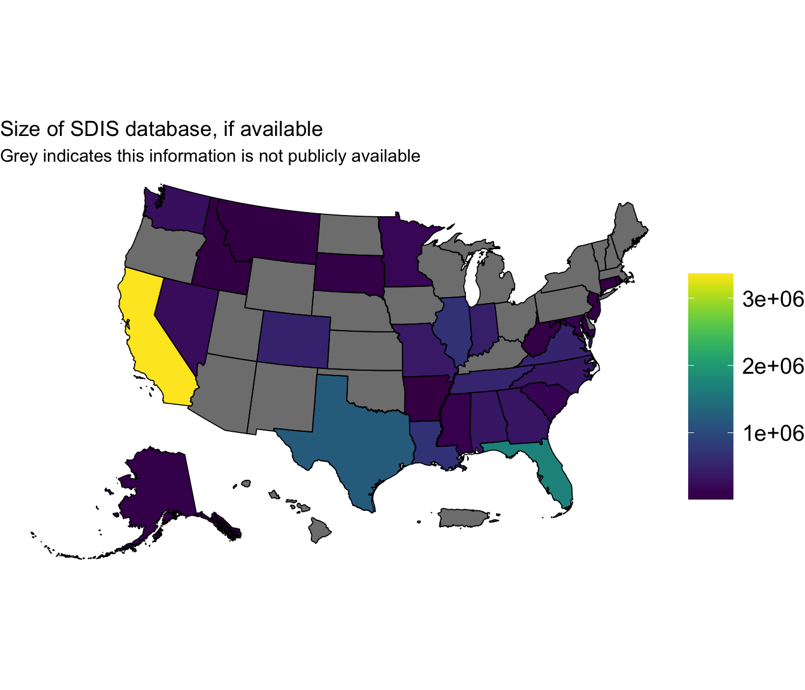
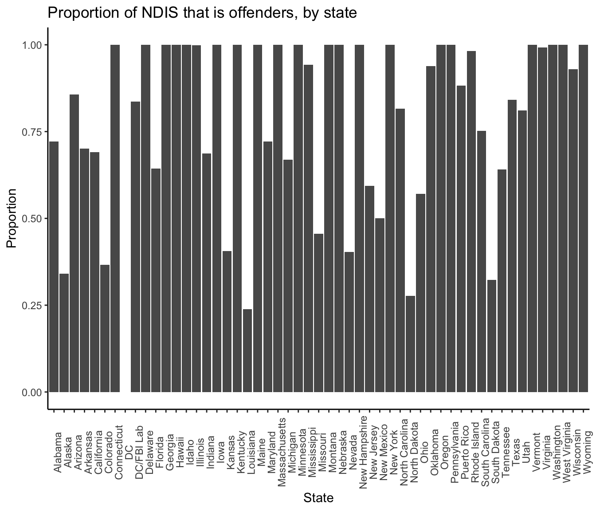
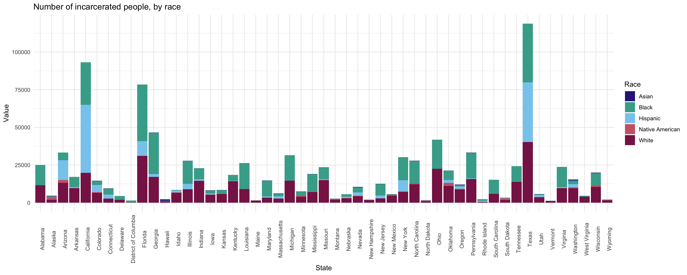

Last updated: 2025-02-17
Checks: 7 0
Knit directory: PODFRIDGE/
This reproducible R Markdown analysis was created with workflowr (version 1.7.1). The Checks tab describes the reproducibility checks that were applied when the results were created. The Past versions tab lists the development history.
Great! Since the R Markdown file has been committed to the Git repository, you know the exact version of the code that produced these results.
Great job! The global environment was empty. Objects defined in the global environment can affect the analysis in your R Markdown file in unknown ways. For reproduciblity it’s best to always run the code in an empty environment.
The command set.seed(20230302) was run prior to running the code in the R Markdown file. Setting a seed ensures that any results that rely on randomness, e.g. subsampling or permutations, are reproducible.
Great job! Recording the operating system, R version, and package versions is critical for reproducibility.
Nice! There were no cached chunks for this analysis, so you can be confident that you successfully produced the results during this run.
Great job! Using relative paths to the files within your workflowr project makes it easier to run your code on other machines.
Great! You are using Git for version control. Tracking code development and connecting the code version to the results is critical for reproducibility.
The results in this page were generated with repository version e6ca3ab. See the Past versions tab to see a history of the changes made to the R Markdown and HTML files.
Note that you need to be careful to ensure that all relevant files for the analysis have been committed to Git prior to generating the results (you can use wflow_publish or wflow_git_commit). workflowr only checks the R Markdown file, but you know if there are other scripts or data files that it depends on. Below is the status of the Git repository when the results were generated:
Untracked files:
Untracked: Rplots.pdf
Note that any generated files, e.g. HTML, png, CSS, etc., are not included in this status report because it is ok for generated content to have uncommitted changes.
These are the previous versions of the repository in which changes were made to the R Markdown (analysis/murphy.rmd) and HTML (docs/murphy.html) files. If you’ve configured a remote Git repository (see ?wflow_git_remote), click on the hyperlinks in the table below to view the files as they were in that past version.
| File | Version | Author | Date | Message |
|---|---|---|---|---|
| Rmd | e6ca3ab | hcvw | 2025-02-17 | wflow_publish(c(“./analysis/murphy.rmd”, “./data/SDIS.csv”, “./data/murphy_foia_cleaned.csv”)) |
| html | 5075fb3 | Stella-Joy | 2024-11-01 | Not sure what changed here |
| html | f143ee1 | tinalasisi | 2024-09-16 | Revised website |
| Rmd | c7eb982 | Stella-Joy | 2024-09-04 | Small color shift in Race gradient |
| Rmd | 785760b | Stella-Joy | 2024-09-04 | Creating DTC figures |
| html | 785760b | Stella-Joy | 2024-09-04 | Creating DTC figures |
| Rmd | d6c9425 | Stella-Joy | 2024-09-03 | explanation update for Murphy FOIA |
| Rmd | f3d1e4e | Stella-Joy | 2024-09-01 | Updates to murphy foia figures |
| html | f3d1e4e | Stella-Joy | 2024-09-01 | Updates to murphy foia figures |
| Rmd | 85383cc | Stella-Joy | 2024-08-29 | changing colors but its ugly rn |
| html | 85383cc | Stella-Joy | 2024-08-29 | changing colors but its ugly rn |
| Rmd | 79694bd | Stella-Joy | 2024-08-18 | Complete first draft of data visualizations |
| html | 79694bd | Stella-Joy | 2024-08-18 | Complete first draft of data visualizations |
| Rmd | a7c07a3 | Stella-Joy | 2024-08-17 | Updates to murphy data visualizations |
| html | a7c07a3 | Stella-Joy | 2024-08-17 | Updates to murphy data visualizations |
| Rmd | 5e8c277 | Stella-Joy | 2024-08-16 | More race Graphs |
| Rmd | 1131bc8 | Stella-Joy | 2024-08-15 | Creating Race Visuals |
| Rmd | 883cdaa | Stella-Joy | 2024-08-09 | Fixed data cleaning |
| Rmd | e8cab2f | Stella-Joy | 2024-08-08 | visualizations for sex and offender_type |
| html | bdc3293 | linmatch | 2024-07-29 | update child_distribution plot |
| Rmd | 5434bd4 | linmatch | 2024-07-25 | fix pipe |
| Rmd | 6cc6921 | linmatch | 2024-07-25 | calculate total by sex |
| Rmd | 1971685 | Stella-Joy | 2024-07-25 | fix male / female issue, start visualizing sex |
| Rmd | 66a01cb | Stella-Joy | 2024-07-25 | Remove root.dir |
| html | 66a01cb | Stella-Joy | 2024-07-25 | Remove root.dir |
| Rmd | 5d0cc04 | Stella-Joy | 2024-07-25 | Cleaned data |
| Rmd | 81560c5 | Stella-Joy | 2024-07-25 | Stella commit |
| html | 8800e0e | Stella-Joy | 2024-07-20 | Update murphy.html |
| Rmd | d0fa29a | Alec Yueh | 2024-07-17 | Murphy Data |
| html | d0fa29a | Alec Yueh | 2024-07-17 | Murphy Data |
| Rmd | a2f6579 | Alec Yueh | 2024-07-08 | created Murphy page |
| html | a2f6579 | Alec Yueh | 2024-07-08 | created Murphy page |
Murphy & Tong (2020) [1] provided information on the racial composition of NDIS for each state.
SDIS is a database that stores DNA profiles collected from individuals, crime scenes, and other sources at the state level. Most of this data is publicly available, found on state governmental websites. However, many states do not have this information publicly available.
The data is separated into information on offenders and arrestees.

The National DNA Index System (NDIS) is the highest level of the Combined DNA Index System (CODIS) and serves as the central repository for DNA profiles submitted by federal, state, and local forensic laboratories across the United States. All NDIS database sizes are publicly avialable [2]

The number of incarcerated people of each racial group for each state was pulled from a variety of sources and is available at Klein et al. (2023)[2]. For the state of Michigan, this data was pulled from a separate source [4].

[1] Murphy, Erin, and Jun H. Tong. “The racial composition of forensic DNA databases.” Calif. L. Rev. 108 (2020): 1847.
[2] https://le.fbi.gov/science-and-lab/biometrics-and-fingerprints/codis/codis-ndis-statistics
[3] Klein, Brennan, et al. “COVID-19 amplified racial disparities in the US criminal legal system.” Nature 617.7960 (2023): 344-350. [4] https://www.vera.org/downloads/pdfdownloads/state-incarceration-trends-michigan.pdf
R version 4.4.1 (2024-06-14)
Platform: x86_64-pc-linux-gnu
Running under: Ubuntu 22.04.4 LTS
Matrix products: default
BLAS: /usr/lib/x86_64-linux-gnu/openblas-pthread/libblas.so.3
LAPACK: /usr/lib/x86_64-linux-gnu/openblas-pthread/libopenblasp-r0.3.20.so; LAPACK version 3.10.0
locale:
[1] LC_CTYPE=en_US.UTF-8 LC_NUMERIC=C
[3] LC_TIME=en_US.UTF-8 LC_COLLATE=en_US.UTF-8
[5] LC_MONETARY=en_US.UTF-8 LC_MESSAGES=en_US.UTF-8
[7] LC_PAPER=en_US.UTF-8 LC_NAME=C
[9] LC_ADDRESS=C LC_TELEPHONE=C
[11] LC_MEASUREMENT=en_US.UTF-8 LC_IDENTIFICATION=C
time zone: America/New_York
tzcode source: system (glibc)
attached base packages:
[1] stats graphics grDevices utils datasets methods base
other attached packages:
[1] sf_1.0-16 viridis_0.6.5 viridisLite_0.4.2 cowplot_1.1.3
[5] tidycensus_1.6.5 sandwich_3.1-0 ggpubr_0.6.0 jtools_2.3.0
[9] knitr_1.48 lubridate_1.9.3 forcats_1.0.0 stringr_1.5.1
[13] dplyr_1.1.4 purrr_1.0.2 readr_2.1.5 tidyr_1.3.1
[17] tibble_3.2.1 ggplot2_3.5.1 tidyverse_2.0.0
loaded via a namespace (and not attached):
[1] tidyselect_1.2.1 farver_2.1.2 fastmap_1.2.0
[4] promises_1.3.0 digest_0.6.37 timechange_0.3.0
[7] lifecycle_1.0.4 magrittr_2.0.3 compiler_4.4.1
[10] rlang_1.1.4 sass_0.4.9 tools_4.4.1
[13] utf8_1.2.4 yaml_2.3.10 ggsignif_0.6.4
[16] labeling_0.4.3 curl_5.2.2 classInt_0.4-10
[19] xml2_1.3.6 abind_1.4-5 KernSmooth_2.23-24
[22] workflowr_1.7.1 withr_3.0.1 grid_4.4.1
[25] fansi_1.0.6 git2r_0.33.0 e1071_1.7-14
[28] colorspace_2.1-1 future_1.34.0 globals_0.16.3
[31] scales_1.3.0 cli_3.6.3 crayon_1.5.3
[34] rmarkdown_2.28 generics_0.1.3 httr_1.4.7
[37] tzdb_0.4.0 DBI_1.2.3 cachem_1.1.0
[40] proxy_0.4-27 pander_0.6.5 splines_4.4.1
[43] rvest_1.0.4 parallel_4.4.1 tigris_2.1
[46] vctrs_0.6.5 jsonlite_1.8.8 carData_3.0-5
[49] car_3.1-2 hms_1.1.3 rstatix_0.7.2
[52] listenv_0.9.1 jquerylib_0.1.4 units_0.8-5
[55] glue_1.7.0 parallelly_1.38.0 codetools_0.2-19
[58] stringi_1.8.4 gtable_0.3.5 later_1.3.2
[61] broom.mixed_0.2.9.5 munsell_0.5.1 furrr_0.3.1
[64] pillar_1.9.0 rappdirs_0.3.3 htmltools_0.5.8.1
[67] R6_2.5.1 rprojroot_2.0.4 evaluate_0.24.0
[70] lattice_0.22-5 highr_0.11 backports_1.5.0
[73] broom_1.0.6 httpuv_1.6.15 bslib_0.8.0
[76] class_7.3-22 uuid_1.2-1 Rcpp_1.0.13
[79] gridExtra_2.3 nlme_3.1-165 whisker_0.4.1
[82] xfun_0.47 fs_1.6.4 zoo_1.8-12
[85] pkgconfig_2.0.3